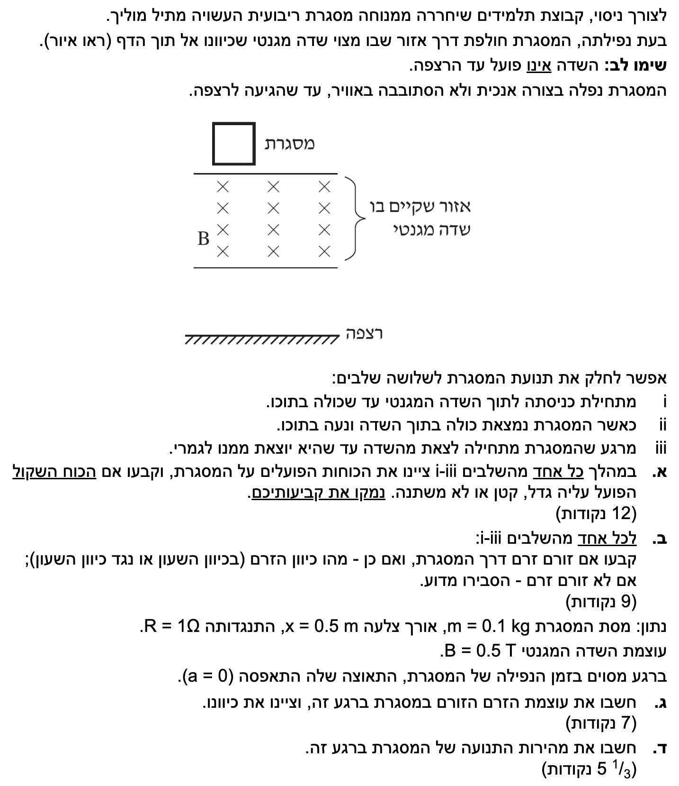
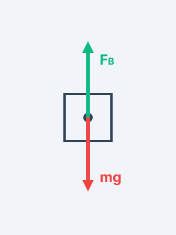
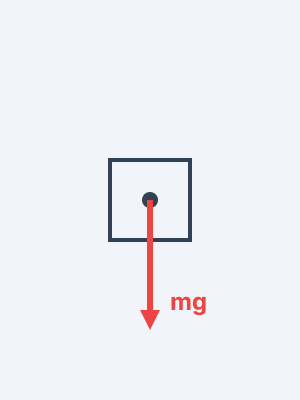

פתרון מלא ומודרך, צעד-אחר-צעד
בכל שאלה קינמטית ודינמית עלינו לקבוע ציר. מכיוון שהמסגרת נופלת מטה, נבחר את הכיוון מטה ככיוון החיובי של ציר ה- \(y\).
לכן, תאוצת הכובד \(g = 10 \text{ m/s}^2\) תפעל בכיוון החיובי (כוח הכובד הוא \(+mg\)). כוחות שיתנגדו לנפילה (כמו הכוח המגנטי) יקבלו סימן שלילי במשוואת הכוחות.

עקרונות: חוק פרדיי וחוק לנץ (שינוי בשטף יוצר זרם מושרה המפעיל כוח שמתנגד לשינוי).
ננתח כל שלב בנפרד. על המסגרת פועל תמיד כוח הכובד \(W=mg\) כלפי מטה. כאשר יש זרם במסגרת הנמצאת בתוך השדה, יפעל עליה גם כוח מגנטי \(F_B\). לפי חוק לנץ, הכוח המגנטי יתנגד לסיבת היווצרותו (הנפילה), ולכן יפעל כלפי מעלה. נכתוב את משוואת הכוחות הכללית בציר \(y\) (מטה חיובי):
כוחות פועלים: המסגרת נכנסת לשדה ולכן שלוש צלעות שלה (התחתונה וחלקי שתי הצלעות האנכיות) נמצאות בתוכו. השדה המגנטי מפעיל כוח על כל צלע שזורם בה זרם. הכוחות המגנטיים הפועלים על שתי הצלעות האנכיות שווים בגודלם ומנוגדים בכיוונם (אחד ימינה ואחד שמאלה), ולכן הם מבטלים זה את זה ושקול הכוחות האופקי הוא אפס. נותר רק הכוח המגנטי \(F_B\) הפועל על הצלע התחתונה כלפי מעלה. בנוסף, פועל כוח הכובד \(mg\) כלפי מטה.
ניתוח הכוח השקול: המסגרת נופלת ולכן גודל המהירות שלה \(v\) גדל. לפי הנוסחה לכא"מ מושרה מתוך דף הנוסחאות \( \varepsilon = B \ell v \). נציב את סימון אורך הצלע מהנתונים \( \ell = x \), ונקבל \( \varepsilon = B x v \). הכא"מ גדל ככל שהמהירות גדלה, ולכן גם הזרם \(I = \frac{\varepsilon}{R}\) יגדל. בעקבות זאת, גם הכוח המגנטי \(F_B = I x B\) גדל. מכיוון ש- \(F_B\) (שפועל נגד כיוון התנועה) גדל, והכוח \(mg\) קבוע, שקול הכוחות \( \Sigma F = mg - F_B \) קטן.
כוחות פועלים: כוח הכובד \(mg\) מטה בלבד.
ניתוח הכוח השקול: כאשר כל המסגרת בתוך השדה (שהוא אחיד), השטף המגנטי דרכה אינו משתנה (\( \frac{\Delta \Phi}{\Delta t} = 0 \)). לכן אין זרם מושרה (\(I=0\)), והכוח המגנטי מתאפס (\(F_B=0\)). שקול הכוחות שווה לכוח הכובד בלבד \( \Sigma F = mg \), והוא נשאר קבוע.
כוחות פועלים: בדומה לשלב הכניסה, גם כאן יש שלוש צלעות בתוך השדה (העליונה וחלקי שתי הצלעות האנכיות). שוב, הכוחות המגנטיים על הצלעות האנכיות שווים ומנוגדים ולכן מבטלים זה את זה. נותר כוח הכובד \(mg\) מטה, וכוח מגנטי \(F_B\) מעלה הפועל רק על הצלע העליונה שעדיין בתוך השדה.
ניתוח הכוח השקול: המסגרת ממשיכה לנפול ולנוע מטה. כל עוד כוח הכובד גדול מהכוח המגנטי (בהנחה שלא הגיעה למהירות סופית לפני כן), גודל מהירותה ימשיך לגדול. בדומה לשלב i, גודל הכוח המגנטי \(F_B\) תלוי במהירות המסגרת. ככל שהמהירות גדלה תוך כדי הנפילה, הכוח המגנטי המתנגד לנפילה יגדל, ולכן שקול הכוחות \( \Sigma F = mg - F_B \) קטן (ממש כמו בשלב הכניסה).
תרשים כוחות - שלבים i ו- iii

תרשים כוחות - שלב ii

מסקנה:
שלב i: שקול הכוחות קטן.
שלב ii: שקול הכוחות קבוע.
שלב iii: שקול הכוחות קטן.
על פי חוק לנץ, הזרם המושרה ייצור שדה מגנטי משלו אשר יתנגד לשינוי בשטף המגנטי שעובר דרך המסגרת.
ננתח לפי שינוי השטף בכל שלב:
מסקנה:
שלב i: יש זרם, נגד כיוון השעון.
שלב ii: אין זרם מושרה (אין שינוי בשטף).
שלב iii: יש זרם, עם כיוון השעון.
הנתונים ניתנו מראש במערכת יחידות MKS, ולכן אין צורך בפעולות המרה.
נרשום את משוואת הכוחות עבור המסגרת כאשר התאוצה אפס. קבענו ציר \(y\) חיובי כלפי מטה:
הגענו למסקנה שהכוח המגנטי חייב להיות שווה בגודלו לכוח הכובד כדי שהתאוצה תתאפס (מצב של "מהירות סופית"). נציב את הביטוי לכוח המגנטי (כאשר נציב \( \ell = x \) כפי שמוגדר אורך הצלע בנתוני השאלה):
נבודד את הזרם \(I\):
נציב את הנתונים המספריים:
לגבי כיוון הזרם: התאוצה יכולה להתאפס רק בשלב שבו פועל כוח מגנטי, כלומר בשלב i או בשלב iii. הכוח המגנטי תמיד פועל כלפי מעלה כדי להתנגד לנפילה.
מכיוון שהשאלה אינה מפרטת באיזה שלב נמצאת המסגרת ברגע זה, נוכל לציין שהכיוון תלוי בשלב.
מסקנה: עוצמת הזרם היא \( I = 4 \text{ A} \).
כיוון הזרם הוא נגד כיוון השעון (אם המסגרת בשלב הכניסה) או עם כיוון השעון (אם היא בשלב היציאה).
ראשית, נמצא מהו הכא"מ (המתח) המושרה שדרוש כדי לייצר זרם של \(4 \text{ A}\) במסגרת שהתנגדותה \(1 \Omega\), באמצעות חוק אוהם:
כעת, נקשר את הכא"מ למהירות תנועת המסגרת דרך חוק פרדיי לתיל נע בשדה מגנטי (שוב נציב \( \ell = x \)). נבודד את המהירות \(v\):
נציב את הערכים המוכרים לנו:
מסקנה: מהירות התנועה של המסגרת ברגע זה היא \( v = 16 \text{ m/s} \).